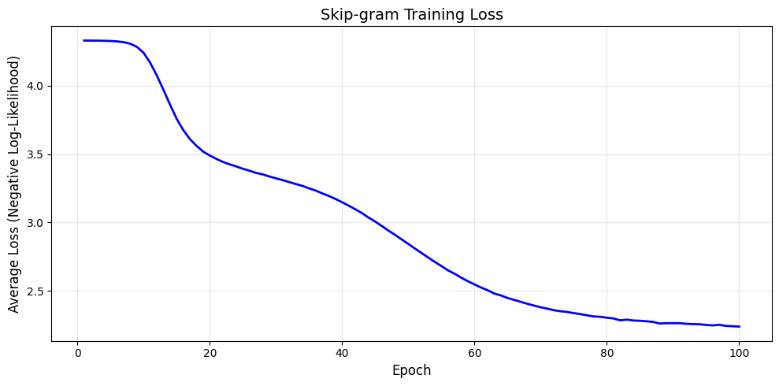
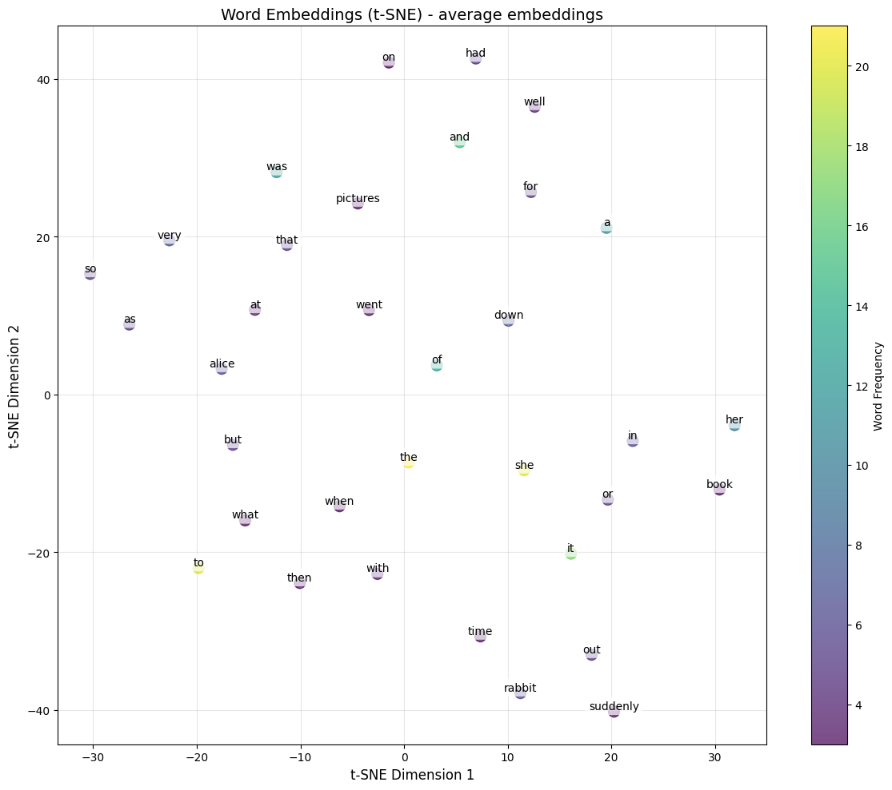

Word2Vec: Mathematics and Implementation from Scratch#
Deep Learning Course
In this notebook, we dive into the mathematical foundations of Word2Vec and implement the Skip-gram model from scratch using only NumPy.
We’ll cover:
Mathematical foundations (one-hot vectors, dot product, softmax)
Skip-gram objective function and gradient derivation
Data preparation for training
Complete Skip-gram implementation from scratch
Training and evaluating the model
2.1 Mathematical Foundations#
One-Hot Vectors as Matrix Lookups#
A one-hot vector serves as an index selector for a row in a weight matrix:
The matrix multiplication \(\mathbf{x}^T W\) simply selects the 3rd row:
import numpy as np
# Demonstrate one-hot as row selector
x = np.array([0, 0, 1, 0])
W = np.array([[1, 2], [3, 4], [5, 6], [7, 8]])
print("One-hot vector x:", x)
print("Weight matrix W:")
print(W)
print("\nx @ W (selects 3rd row):", x @ W)
print("Direct access W[2]:", W[2])
One-hot vector x: [0 0 1 0]
Weight matrix W:
[[1 2]
[3 4]
[5 6]
[7 8]]
x @ W (selects 3rd row): [5 6]
Direct access W[2]: [5 6]
Key Insight: In Word2Vec, the embedding layer is essentially a lookup table. The “multiplication” by a one-hot vector is just selecting a row—this is why it’s so efficient!
Dot Product and Similarity#
The dot product measures the alignment between two vectors:
Where \(\theta\) is the angle between the vectors.
def dot_product(u, v):
return np.sum(u * v)
def cosine_similarity(u, v):
"""Normalized dot product - ranges from -1 to 1"""
norm_u = np.linalg.norm(u)
norm_v = np.linalg.norm(v)
if norm_u == 0 or norm_v == 0:
return 0
return dot_product(u, v) / (norm_u * norm_v)
# Example
v1 = np.array([1, 0])
v2 = np.array([1, 1])
v3 = np.array([-1, 0])
print(f"v1 = {v1}, v2 = {v2}, v3 = {v3}")
print(f"dot(v1, v2) = {dot_product(v1, v2):.2f} (positive = same direction)")
print(f"dot(v1, v3) = {dot_product(v1, v3):.2f} (negative = opposite direction)")
print(f"cosine(v1, v2) = {cosine_similarity(v1, v2):.4f}")
print(f"cosine(v1, v3) = {cosine_similarity(v1, v3):.4f}")
v1 = [1 0], v2 = [1 1], v3 = [-1 0]
dot(v1, v2) = 1.00 (positive = same direction)
dot(v1, v3) = -1.00 (negative = opposite direction)
cosine(v1, v2) = 0.7071
cosine(v1, v3) = -1.0000
Softmax Function#
Softmax converts a vector of scores into a probability distribution:
def softmax(y, temperature=1.0):
"""Compute softmax with optional temperature scaling."""
y_scaled = y / temperature
exp_y = np.exp(y_scaled - np.max(y_scaled)) # Numerical stability
return exp_y / np.sum(exp_y)
# Example
scores = np.array([4.0, 2.5, 1.0])
probs = softmax(scores)
print("Raw scores:", scores)
print("Softmax probabilities:", probs)
print("Sum of probabilities:", np.sum(probs))
# Effect of temperature
print("\nEffect of temperature on [4.0, 2.0, 1.0]:")
for t in [0.5, 1.0, 2.0, 5.0]:
p = softmax(np.array([4.0, 2.0, 1.0]), temperature=t)
print(f" T={t}: {p}")
Raw scores: [4. 2.5 1. ]
Softmax probabilities: [0.78559703 0.17529039 0.03911257]
Sum of probabilities: 1.0
Effect of temperature on [4.0, 2.0, 1.0]:
T=0.5: [0.97962921 0.01794253 0.00242826]
T=1.0: [0.84379473 0.1141952 0.04201007]
T=2.0: [0.62853172 0.2312239 0.14024438]
T=5.0: [0.45062671 0.30206411 0.24730918]
Note: Lower temperature → sharper distribution (more confident). Higher temperature → flatter distribution (less confident).
2.2 Skip-gram Model: Objective Function and Gradients#
Problem Formulation#
Given a corpus of \(T\) words, the Skip-gram model maximizes the probability of context words given a center word.
Notation:
\(w_t\): word at position \(t\) in the corpus
\(m\): window size (number of context words on each side)
\(V\): vocabulary size
\(d\): embedding dimension
The Objective Function#
For a single center word \(w_t\) and a single context word \(w_{t+j}\) (where \(-m \leq j \leq m\), \(j \neq 0\)):
Where:
\(\mathbf{v}_{w_t} \in \mathbb{R}^d\): center word embedding (input embedding)
\(\mathbf{u}_{w_{t+j}} \in \mathbb{R}^d\): context word embedding (output embedding)
\(\mathbf{u}_k\): embedding for the \(k\)-th word in vocabulary (as context)
The full objective (average negative log-likelihood):
Understanding the Architecture#
┌─────────────────────────────────────┐
│ One-hot input: w_t (center word) │
│ Dimension: V (vocabulary size) │
└─────────────────┬───────────────────┘
│
▼
┌─────────────────────────────────────┐
│ Input Embedding Matrix W₁ │
│ Shape: V × d │
│ (Each row is a center word vector) │
└─────────────────┬───────────────────┘
│
▼
┌─────────────────────────────────────┐
│ Hidden representation: v_{w_t} │
│ Dimension: d (e.g., 100-300) │
└─────────────────┬───────────────────┘
│
▼
┌─────────────────────────────────────┐
│ Output Embedding Matrix W₂ │
│ Shape: d × V │
│ (Each column is a context vector) │
└─────────────────┬───────────────────┘
│
▼
┌─────────────────────────────────────┐
│ Score vector: u_k^T · v_{w_t} │
│ Dimension: V │
└─────────────────┬───────────────────┘
│
▼
┌─────────────────────────────────────┐
│ Softmax → Probability distribution │
│ Dimension: V │
└─────────────────────────────────────┘
Computing the Gradient#
For a single training pair (center word \(c\), context word \(o\)), the loss is:
Gradient with respect to \(\mathbf{v}_c\) (center word embedding):
This can be written as:
Gradient with respect to \(\mathbf{u}_k\) (context word embedding):
Where \(\mathbb{1}[k=o]\) is 1 if \(k\) is the true context word, 0 otherwise.
def compute_gradients(v_c, U, o_idx):
"""
Compute gradients for Skip-gram.
Args:
v_c: Center word embedding (d,)
U: Context embedding matrix (V, d)
o_idx: Index of true context word
Returns:
grad_v_c: Gradient for center embedding (d,)
grad_U: Gradient for context embeddings (V, d)
"""
V, d = U.shape
# Compute scores
scores = U @ v_c # (V,)
# Compute softmax probabilities
probs = softmax(scores) # (V,)
# Gradient for v_c: -u_o + sum_k P(k|c) * u_k
grad_v_c = -U[o_idx] + probs @ U # (d,)
# Gradient for U: (P(k|c) - 1[k=o]) * v_c
grad_U = np.outer(probs, v_c) # (V, d)
grad_U[o_idx] -= v_c # Subtract v_c for the true context word
return grad_v_c, grad_U
# Example with small dimensions
np.random.seed(42)
V, d = 5, 3
# Random embeddings
v_c = np.random.randn(d)
U = np.random.randn(V, d)
o_idx = 2 # True context word index
grad_v_c, grad_U = compute_gradients(v_c, U, o_idx)
print(f"Center embedding v_c: {v_c}")
print(f"Context matrix U shape: {U.shape}")
print(f"True context word index: {o_idx}")
print(f"\nGradient for v_c: {grad_v_c}")
print(f"Gradient for U shape: {grad_U.shape}")
Center embedding v_c: [ 0.49671415 -0.1382643 0.64768854]
Context matrix U shape: (5, 3)
True context word index: 2
Gradient for v_c: [0.34411793 0.15870118 0.11123075]
Gradient for U shape: (5, 3)
The Computational Problem: Full Softmax#
The issue with the standard softmax is that we must compute \(\exp(\mathbf{u}_k^T \mathbf{v}_c)\) for all \(V\) words in the vocabulary.
For \(V = 100,000\) words:
Each forward pass: 100,000 dot products
Each backward pass: 100,000 gradient updates
This is extremely slow!
Solutions in practice:
Negative Sampling: Approximate softmax by only computing for a few “negative” samples
Hierarchical Softmax: Use a binary tree structure
For educational purposes, we’ll implement the full softmax version to understand the fundamentals.
2.3 Implementation from Scratch: Data Preparation#
import numpy as np
from collections import Counter
import re
import random
# ============================================
# STEP 1: CORPUS PREPARATION
# ============================================
def load_and_preprocess(text):
"""Load and preprocess text corpus."""
# Convert to lowercase
text = text.lower()
# Remove punctuation
text = re.sub(r'[^\w\s]', '', text)
# Split into words
words = text.split()
return words
# Example corpus (in practice, use a much larger corpus)
corpus_text = """
The king sat on his throne. The queen sat beside the king.
The prince and princess played in the garden. The royal family
lived in a beautiful castle. The king ruled the kingdom wisely.
The queen was loved by all the people. The prince learned to
become a great ruler. The princess danced at the royal ball.
The kingdom prospered under the king and queen. The castle
stood tall on the hill overlooking the kingdom.
"""
words = load_and_preprocess(corpus_text)
print(f"Corpus size: {len(words)} words")
print(f"First 20 words: {words[:20]}")
Corpus size: 75 words
First 20 words: ['the', 'king', 'sat', 'on', 'his', 'throne', 'the', 'queen', 'sat', 'beside', 'the', 'king', 'the', 'prince', 'and', 'princess', 'played', 'in', 'the', 'garden']
# ============================================
# STEP 2: BUILD VOCABULARY
# ============================================
def build_vocabulary(words, min_count=1):
"""Build vocabulary with word-to-index mappings."""
# Count word frequencies
word_counts = Counter(words)
# Filter by minimum count
filtered_words = [w for w in words if word_counts[w] >= min_count]
# Create vocabulary (sorted by frequency for consistency)
vocab = sorted(set(filtered_words),
key=lambda w: (-word_counts[w], w))
# Create mappings
word2idx = {word: idx for idx, word in enumerate(vocab)}
idx2word = {idx: word for word, idx in word2idx.items()}
return vocab, word2idx, idx2word, word_counts
vocab, word2idx, idx2word, word_counts = build_vocabulary(words, min_count=1)
print(f"\nVocabulary size: {len(vocab)}")
print(f"Word-to-index mapping (first 10):")
for word in list(word2idx.keys())[:10]:
print(f" '{word}': {word2idx[word]}")
Vocabulary size: 42
Word-to-index mapping (first 10):
'the': 0
'king': 1
'kingdom': 2
'queen': 3
'a': 4
'and': 5
'castle': 6
'in': 7
'on': 8
'prince': 9
# ============================================
# STEP 3: GENERATE TRAINING DATA FOR SKIP-GRAM
# ============================================
def generate_skipgram_data(words, word2idx, window_size=2):
"""
Generate (center_word, context_word) pairs for Skip-gram.
Args:
words: List of words in the corpus
word2idx: Word to index mapping
window_size: Number of context words on each side
Returns:
pairs: List of (center_idx, context_idx) tuples
"""
pairs = []
for i, center_word in enumerate(words):
center_idx = word2idx[center_word]
# Define context window
start = max(0, i - window_size)
end = min(len(words), i + window_size + 1)
for j in range(start, end):
if i != j: # Skip the center word itself
context_word = words[j]
context_idx = word2idx[context_word]
pairs.append((center_idx, context_idx))
return pairs
# Generate training pairs
window_size = 2
training_pairs = generate_skipgram_data(words, word2idx, window_size)
print(f"\nTraining pairs generated: {len(training_pairs)}")
print(f"\nFirst 15 training pairs (center → context):")
for center_idx, context_idx in training_pairs[:15]:
center_word = idx2word[center_idx]
context_word = idx2word[context_idx]
print(f" '{center_word}' → '{context_word}'")
Training pairs generated: 294
First 15 training pairs (center → context):
'the' → 'king'
'the' → 'sat'
'king' → 'the'
'king' → 'sat'
'king' → 'on'
'sat' → 'the'
'sat' → 'king'
'sat' → 'on'
'sat' → 'his'
'on' → 'king'
'on' → 'sat'
'on' → 'his'
'on' → 'throne'
'his' → 'sat'
'his' → 'on'
# ============================================
# STEP 4: VISUALIZE THE WINDOW SLIDING
# ============================================
def visualize_windows(words, window_size=2, num_examples=3):
"""Visualize how the sliding window generates training pairs."""
print(f"\nVisualizing Skip-gram Window (size={window_size}):")
print("=" * 60)
for start_idx in range(min(num_examples, len(words) - 2*window_size)):
center_pos = start_idx + window_size
center_word = words[center_pos]
print(f"\nSentence segment: ...", end=" ")
for i in range(start_idx, min(center_pos + window_size + 1, len(words))):
if i == center_pos:
print(f"[{words[i]}]", end=" ")
else:
print(words[i], end=" ")
print("...")
print(f"Center word: '{center_word}'")
print(f"Context words: ", end="")
for j in range(max(0, center_pos - window_size),
min(len(words), center_pos + window_size + 1)):
if j != center_pos:
print(f"'{words[j]}' ", end="")
print()
visualize_windows(words, window_size=2, num_examples=3)
Visualizing Skip-gram Window (size=2):
============================================================
Sentence segment: ... the king [sat] on his ...
Center word: 'sat'
Context words: 'the' 'king' 'on' 'his'
Sentence segment: ... king sat [on] his throne ...
Center word: 'on'
Context words: 'king' 'sat' 'his' 'throne'
Sentence segment: ... sat on [his] throne the ...
Center word: 'his'
Context words: 'sat' 'on' 'throne' 'the'
Using a Larger Corpus for Better Results#
For meaningful embeddings, we need a larger corpus. Let’s use a sample from Alice in Wonderland:
# For a real implementation, download a larger corpus
alice_text = """
Alice was beginning to get very tired of sitting by her sister on the bank
and of having nothing to do once or twice she had peeped into the book her
sister was reading but it had no pictures or conversations in it and what is
the use of a book thought Alice without pictures or conversations So she was
considering in her own mind as well as she could for the hot day made her feel
very sleepy and stupid whether the pleasure of making a daisy chain would be
worth the trouble of getting up and picking the daisies when suddenly a White
Rabbit with pink eyes ran close by her There was nothing so very remarkable in
that nor did Alice think it so very much out of the way to hear the Rabbit say
to itself Oh dear Oh dear I shall be late When she thought it over afterwards
it occurred to her that she ought to have wondered at this but at the time it
all seemed quite natural But when the Rabbit actually took a watch out of its
waistcoat pocket and looked at it and then hurried on Alice started to her feet
for it flashed across her mind that she had never before seen a rabbit with
either a waistcoat pocket or a watch to take out of it and burning with curiosity
she ran across the field after it and fortunately was just in time to see it pop
down a large rabbit hole under the hedge In another moment down went Alice after
it never once considering how in the world she was to get out again The rabbit
hole went straight on like a tunnel for some way and then dipped suddenly down
so suddenly that Alice had not a moment to think about stopping herself before
she found herself falling down a very deep well Either the well was very deep
or she fell very slowly for she had plenty of time as she went down to look
about her and to wonder what was going to happen next First she tried to look
down and make out what she was coming to but it was too dark to see anything
then she looked at the sides of the well and noticed that they were filled with
cupboards and book shelves here and there she saw maps and pictures hung upon
pegs She took down a jar from one of the shelves as she passed it was labelled
ORANGE MARMALADE but to her great disappointment it was empty she did not like
to drop the jar for fear of killing somebody underneath so managed to put it
into one of the cupboards as she fell past it
"""
# Process the larger corpus
words = load_and_preprocess(alice_text)
vocab, word2idx, idx2word, word_counts = build_vocabulary(words, min_count=2)
training_pairs = generate_skipgram_data(words, word2idx, window_size=2)
print(f"Corpus size: {len(words)} words")
print(f"Vocabulary size (min_count=2): {len(vocab)} words")
print(f"Training pairs: {len(training_pairs)}")
print(f"\nTop 10 most frequent words:")
for word, count in word_counts.most_common(10):
print(f" '{word}': {count}")
---------------------------------------------------------------------------
KeyError Traceback (most recent call last)
Cell In[9], line 38
36 words = load_and_preprocess(alice_text)
37 vocab, word2idx, idx2word, word_counts = build_vocabulary(words, min_count=2)
---> 38 training_pairs = generate_skipgram_data(words, word2idx, window_size=2)
40 print(f"Corpus size: {len(words)} words")
41 print(f"Vocabulary size (min_count=2): {len(vocab)} words")
Cell In[7], line 29, in generate_skipgram_data(words, word2idx, window_size)
27 if i != j: # Skip the center word itself
28 context_word = words[j]
---> 29 context_idx = word2idx[context_word]
30 pairs.append((center_idx, context_idx))
32 return pairs
KeyError: 'beginning'
2.4 Implementation from Scratch: Model Building and Training#
The Skip-gram Model Class#
class SkipGramModel:
"""
Skip-gram Word2Vec implementation from scratch.
Architecture:
Input (one-hot) → Center Embedding (W1) → Output Scores (W2) → Softmax
"""
def __init__(self, vocab_size, embedding_dim, seed=42):
"""
Initialize the Skip-gram model.
Args:
vocab_size: Size of vocabulary (V)
embedding_dim: Dimension of word embeddings (d)
seed: Random seed for reproducibility
"""
self.vocab_size = vocab_size
self.embedding_dim = embedding_dim
# Initialize weight matrices
np.random.seed(seed)
# W1: Center word embeddings (V × d)
# Each row is the embedding for a word when it's the CENTER word
self.W1 = np.random.randn(vocab_size, embedding_dim) * 0.01
# W2: Context word embeddings (V × d)
# Each row is the embedding for a word when it's a CONTEXT word
self.W2 = np.random.randn(vocab_size, embedding_dim) * 0.01
# For tracking training
self.loss_history = []
def forward(self, center_idx):
"""
Forward pass: compute probability distribution over vocabulary.
Args:
center_idx: Index of center word
Returns:
probs: Probability distribution (V,)
h: Hidden representation (d,)
"""
# Get center word embedding (this is essentially a lookup)
h = self.W1[center_idx] # (d,)
# Compute scores: dot product with all context embeddings
scores = self.W2 @ h # (V,)
# Apply softmax to get probabilities
probs = self._softmax(scores)
return probs, h
def _softmax(self, x):
"""Numerically stable softmax."""
x_shifted = x - np.max(x)
exp_x = np.exp(x_shifted)
return exp_x / np.sum(exp_x)
def compute_loss(self, center_idx, context_idx):
"""
Compute negative log-likelihood loss.
Args:
center_idx: Index of center word
context_idx: Index of true context word
Returns:
loss: Negative log-likelihood (scalar)
"""
probs, _ = self.forward(center_idx)
# Avoid log(0) by clipping
loss = -np.log(probs[context_idx] + 1e-10)
return loss
def backward(self, center_idx, context_idx, h, probs, learning_rate):
"""
Backward pass: compute gradients and update weights.
Args:
center_idx: Index of center word
context_idx: Index of true context word
h: Hidden representation from forward pass
probs: Probability distribution from forward pass
learning_rate: Learning rate for gradient descent
"""
# Create error vector: predicted - true (one-hot)
# e_i = P(i|c) - 1 if i is context word, else P(i|c)
e = probs.copy()
e[context_idx] -= 1 # Subtract 1 for the true context word
# Gradient for W2 (context embeddings)
# dW2[i] = e[i] * h
grad_W2 = np.outer(e, h) # (V, d)
# Gradient for W1 (center embedding)
# dW1[c] = W2^T @ e
grad_W1_center = self.W2.T @ e # (d,)
# Update weights
self.W2 -= learning_rate * grad_W2
self.W1[center_idx] -= learning_rate * grad_W1_center
def train(self, training_pairs, epochs=10, learning_rate=0.01,
verbose=True, print_every=100):
"""
Train the Skip-gram model.
Args:
training_pairs: List of (center_idx, context_idx) tuples
epochs: Number of training epochs
learning_rate: Learning rate
verbose: Whether to print progress
print_every: Print loss every N samples
"""
n_samples = len(training_pairs)
for epoch in range(epochs):
# Shuffle training pairs each epoch
random.shuffle(training_pairs)
epoch_loss = 0
for i, (center_idx, context_idx) in enumerate(training_pairs):
# Forward pass
probs, h = self.forward(center_idx)
# Compute loss
loss = -np.log(probs[context_idx] + 1e-10)
epoch_loss += loss
# Backward pass
self.backward(center_idx, context_idx, h, probs, learning_rate)
# Print progress
if verbose and (i + 1) % print_every == 0:
avg_loss = epoch_loss / (i + 1)
print(f"Epoch {epoch+1}/{epochs}, Step {i+1}/{n_samples}, "
f"Avg Loss: {avg_loss:.4f}")
# Record average loss for this epoch
avg_epoch_loss = epoch_loss / n_samples
self.loss_history.append(avg_epoch_loss)
if verbose:
print(f"\nEpoch {epoch+1} completed. Average Loss: {avg_epoch_loss:.4f}\n")
def get_center_embedding(self, word, word2idx):
"""Get the center word embedding for a word."""
if word not in word2idx:
raise ValueError(f"'{word}' not in vocabulary")
idx = word2idx[word]
return self.W1[idx]
def get_context_embedding(self, word, word2idx):
"""Get the context word embedding for a word."""
if word not in word2idx:
raise ValueError(f"'{word}' not in vocabulary")
idx = word2idx[word]
return self.W2[idx]
def get_embedding(self, word, word2idx, combine='center'):
"""
Get word embedding (can combine center and context embeddings).
Args:
word: The word to get embedding for
word2idx: Word to index mapping
combine: 'center', 'context', or 'average'
"""
if combine == 'center':
return self.get_center_embedding(word, word2idx)
elif combine == 'context':
return self.get_context_embedding(word, word2idx)
elif combine == 'average':
v = self.get_center_embedding(word, word2idx)
u = self.get_context_embedding(word, word2idx)
return (v + u) / 2
else:
raise ValueError(f"Unknown combine method: {combine}")
def most_similar(self, word, word2idx, idx2word, topn=10, combine='average'):
"""Find most similar words to a given word."""
if word not in word2idx:
raise ValueError(f"'{word}' not in vocabulary")
# Get embedding for query word
query_vec = self.get_embedding(word, word2idx, combine=combine)
query_norm = np.linalg.norm(query_vec)
# Compute similarities with all words
similarities = []
for idx in range(self.vocab_size):
if idx2word[idx] == word:
continue # Skip the query word itself
# Get embedding for this word
if combine == 'center':
vec = self.W1[idx]
elif combine == 'context':
vec = self.W2[idx]
else:
vec = (self.W1[idx] + self.W2[idx]) / 2
vec_norm = np.linalg.norm(vec)
# Cosine similarity
if query_norm > 0 and vec_norm > 0:
sim = np.dot(query_vec, vec) / (query_norm * vec_norm)
else:
sim = 0
similarities.append((idx2word[idx], sim))
# Sort by similarity (descending)
similarities.sort(key=lambda x: x[1], reverse=True)
return similarities[:topn]
def analogy(self, word_a, word_b, word_c, word2idx, idx2word,
topn=5, combine='average'):
"""
Solve analogy: word_a is to word_b as word_c is to ?
Mathematically: ? = word_b - word_a + word_c
"""
vec_a = self.get_embedding(word_a, word2idx, combine)
vec_b = self.get_embedding(word_b, word2idx, combine)
vec_c = self.get_embedding(word_c, word2idx, combine)
# Compute target vector
target_vec = vec_b - vec_a + vec_c
target_norm = np.linalg.norm(target_vec)
# Find closest words
exclude = {word_a, word_b, word_c}
similarities = []
for idx in range(self.vocab_size):
word = idx2word[idx]
if word in exclude:
continue
if combine == 'center':
vec = self.W1[idx]
elif combine == 'context':
vec = self.W2[idx]
else:
vec = (self.W1[idx] + self.W2[idx]) / 2
vec_norm = np.linalg.norm(vec)
if target_norm > 0 and vec_norm > 0:
sim = np.dot(target_vec, vec) / (target_norm * vec_norm)
else:
sim = 0
similarities.append((word, sim))
similarities.sort(key=lambda x: x[1], reverse=True)
return similarities[:topn]
print("SkipGramModel class defined successfully!")
SkipGramModel class defined successfully!
Training the Model#
# ============================================
# TRAIN THE SKIP-GRAM MODEL
# ============================================
# Model parameters
embedding_dim = 50
learning_rate = 0.025
epochs = 100
window_size = 2
print("="*60)
print("SKIP-GRAM TRAINING")
print("="*60)
print(f"Vocabulary size: {len(vocab)}")
print(f"Embedding dimension: {embedding_dim}")
print(f"Learning rate: {learning_rate}")
print(f"Epochs: {epochs}")
print(f"Training pairs: {len(training_pairs)}")
print("="*60)
# Initialize model
model = SkipGramModel(vocab_size=len(vocab), embedding_dim=embedding_dim)
# Train
model.train(training_pairs, epochs=epochs, learning_rate=learning_rate,
verbose=True, print_every=200)
============================================================
SKIP-GRAM TRAINING
============================================================
Vocabulary size: 76
Embedding dimension: 50
Learning rate: 0.025
Epochs: 100
Training pairs: 294
============================================================
Epoch 1/100, Step 200/294, Avg Loss: 4.3307
Epoch 1 completed. Average Loss: 4.3307
Epoch 2/100, Step 200/294, Avg Loss: 4.3304
Epoch 2 completed. Average Loss: 4.3304
Epoch 3/100, Step 200/294, Avg Loss: 4.3300
Epoch 3 completed. Average Loss: 4.3299
Epoch 4/100, Step 200/294, Avg Loss: 4.3292
Epoch 4 completed. Average Loss: 4.3291
Epoch 5/100, Step 200/294, Avg Loss: 4.3277
Epoch 5 completed. Average Loss: 4.3276
Epoch 6/100, Step 200/294, Avg Loss: 4.3252
Epoch 6 completed. Average Loss: 4.3247
Epoch 7/100, Step 200/294, Avg Loss: 4.3209
Epoch 7 completed. Average Loss: 4.3189
Epoch 8/100, Step 200/294, Avg Loss: 4.3079
Epoch 8 completed. Average Loss: 4.3072
Epoch 9/100, Step 200/294, Avg Loss: 4.2859
Epoch 9 completed. Average Loss: 4.2841
Epoch 10/100, Step 200/294, Avg Loss: 4.2439
Epoch 10 completed. Average Loss: 4.2405
Epoch 11/100, Step 200/294, Avg Loss: 4.1904
Epoch 11 completed. Average Loss: 4.1677
Epoch 12/100, Step 200/294, Avg Loss: 4.1067
Epoch 12 completed. Average Loss: 4.0745
Epoch 13/100, Step 200/294, Avg Loss: 4.0175
Epoch 13 completed. Average Loss: 3.9697
Epoch 14/100, Step 200/294, Avg Loss: 3.8235
Epoch 14 completed. Average Loss: 3.8608
Epoch 15/100, Step 200/294, Avg Loss: 3.8049
Epoch 15 completed. Average Loss: 3.7575
Epoch 16/100, Step 200/294, Avg Loss: 3.6565
Epoch 16 completed. Average Loss: 3.6748
Epoch 17/100, Step 200/294, Avg Loss: 3.5020
Epoch 17 completed. Average Loss: 3.6090
Epoch 18/100, Step 200/294, Avg Loss: 3.5916
Epoch 18 completed. Average Loss: 3.5600
Epoch 19/100, Step 200/294, Avg Loss: 3.5570
Epoch 19 completed. Average Loss: 3.5176
Epoch 20/100, Step 200/294, Avg Loss: 3.4246
Epoch 20 completed. Average Loss: 3.4894
Epoch 21/100, Step 200/294, Avg Loss: 3.4769
Epoch 21 completed. Average Loss: 3.4648
Epoch 22/100, Step 200/294, Avg Loss: 3.5515
Epoch 22 completed. Average Loss: 3.4421
Epoch 23/100, Step 200/294, Avg Loss: 3.4522
Epoch 23 completed. Average Loss: 3.4246
Epoch 24/100, Step 200/294, Avg Loss: 3.3612
Epoch 24 completed. Average Loss: 3.4094
Epoch 25/100, Step 200/294, Avg Loss: 3.3767
Epoch 25 completed. Average Loss: 3.3924
Epoch 26/100, Step 200/294, Avg Loss: 3.4029
Epoch 26 completed. Average Loss: 3.3782
Epoch 27/100, Step 200/294, Avg Loss: 3.3696
Epoch 27 completed. Average Loss: 3.3619
Epoch 28/100, Step 200/294, Avg Loss: 3.3141
Epoch 28 completed. Average Loss: 3.3515
Epoch 29/100, Step 200/294, Avg Loss: 3.2810
Epoch 29 completed. Average Loss: 3.3357
Epoch 30/100, Step 200/294, Avg Loss: 3.3144
Epoch 30 completed. Average Loss: 3.3228
Epoch 31/100, Step 200/294, Avg Loss: 3.3180
Epoch 31 completed. Average Loss: 3.3093
Epoch 32/100, Step 200/294, Avg Loss: 3.2634
Epoch 32 completed. Average Loss: 3.2950
Epoch 33/100, Step 200/294, Avg Loss: 3.2939
Epoch 33 completed. Average Loss: 3.2805
Epoch 34/100, Step 200/294, Avg Loss: 3.2796
Epoch 34 completed. Average Loss: 3.2673
Epoch 35/100, Step 200/294, Avg Loss: 3.3006
Epoch 35 completed. Average Loss: 3.2489
Epoch 36/100, Step 200/294, Avg Loss: 3.2002
Epoch 36 completed. Average Loss: 3.2329
Epoch 37/100, Step 200/294, Avg Loss: 3.2021
Epoch 37 completed. Average Loss: 3.2125
Epoch 38/100, Step 200/294, Avg Loss: 3.2097
Epoch 38 completed. Average Loss: 3.1933
Epoch 39/100, Step 200/294, Avg Loss: 3.1840
Epoch 39 completed. Average Loss: 3.1714
Epoch 40/100, Step 200/294, Avg Loss: 3.1185
Epoch 40 completed. Average Loss: 3.1473
Epoch 41/100, Step 200/294, Avg Loss: 3.1533
Epoch 41 completed. Average Loss: 3.1219
Epoch 42/100, Step 200/294, Avg Loss: 3.0726
Epoch 42 completed. Average Loss: 3.0959
Epoch 43/100, Step 200/294, Avg Loss: 3.0719
Epoch 43 completed. Average Loss: 3.0676
Epoch 44/100, Step 200/294, Avg Loss: 2.9835
Epoch 44 completed. Average Loss: 3.0351
Epoch 45/100, Step 200/294, Avg Loss: 3.0077
Epoch 45 completed. Average Loss: 3.0061
Epoch 46/100, Step 200/294, Avg Loss: 3.0077
Epoch 46 completed. Average Loss: 2.9734
Epoch 47/100, Step 200/294, Avg Loss: 2.9818
Epoch 47 completed. Average Loss: 2.9399
Epoch 48/100, Step 200/294, Avg Loss: 2.8590
Epoch 48 completed. Average Loss: 2.9085
Epoch 49/100, Step 200/294, Avg Loss: 2.8901
Epoch 49 completed. Average Loss: 2.8754
Epoch 50/100, Step 200/294, Avg Loss: 2.8140
Epoch 50 completed. Average Loss: 2.8422
Epoch 51/100, Step 200/294, Avg Loss: 2.8044
Epoch 51 completed. Average Loss: 2.8087
Epoch 52/100, Step 200/294, Avg Loss: 2.7575
Epoch 52 completed. Average Loss: 2.7758
Epoch 53/100, Step 200/294, Avg Loss: 2.7646
Epoch 53 completed. Average Loss: 2.7432
Epoch 54/100, Step 200/294, Avg Loss: 2.7033
Epoch 54 completed. Average Loss: 2.7109
Epoch 55/100, Step 200/294, Avg Loss: 2.6416
Epoch 55 completed. Average Loss: 2.6807
Epoch 56/100, Step 200/294, Avg Loss: 2.6399
Epoch 56 completed. Average Loss: 2.6493
Epoch 57/100, Step 200/294, Avg Loss: 2.6551
Epoch 57 completed. Average Loss: 2.6240
Epoch 58/100, Step 200/294, Avg Loss: 2.5211
Epoch 58 completed. Average Loss: 2.5954
Epoch 59/100, Step 200/294, Avg Loss: 2.5654
Epoch 59 completed. Average Loss: 2.5693
Epoch 60/100, Step 200/294, Avg Loss: 2.4976
Epoch 60 completed. Average Loss: 2.5463
Epoch 61/100, Step 200/294, Avg Loss: 2.5283
Epoch 61 completed. Average Loss: 2.5232
Epoch 62/100, Step 200/294, Avg Loss: 2.5029
Epoch 62 completed. Average Loss: 2.5030
Epoch 63/100, Step 200/294, Avg Loss: 2.3931
Epoch 63 completed. Average Loss: 2.4795
Epoch 64/100, Step 200/294, Avg Loss: 2.4109
Epoch 64 completed. Average Loss: 2.4653
Epoch 65/100, Step 200/294, Avg Loss: 2.3672
Epoch 65 completed. Average Loss: 2.4468
Epoch 66/100, Step 200/294, Avg Loss: 2.3727
Epoch 66 completed. Average Loss: 2.4328
Epoch 67/100, Step 200/294, Avg Loss: 2.4989
Epoch 67 completed. Average Loss: 2.4184
Epoch 68/100, Step 200/294, Avg Loss: 2.3628
Epoch 68 completed. Average Loss: 2.4043
Epoch 69/100, Step 200/294, Avg Loss: 2.3351
Epoch 69 completed. Average Loss: 2.3913
Epoch 70/100, Step 200/294, Avg Loss: 2.3071
Epoch 70 completed. Average Loss: 2.3786
Epoch 71/100, Step 200/294, Avg Loss: 2.4291
Epoch 71 completed. Average Loss: 2.3690
Epoch 72/100, Step 200/294, Avg Loss: 2.3441
Epoch 72 completed. Average Loss: 2.3571
Epoch 73/100, Step 200/294, Avg Loss: 2.3206
Epoch 73 completed. Average Loss: 2.3499
Epoch 74/100, Step 200/294, Avg Loss: 2.3127
Epoch 74 completed. Average Loss: 2.3443
Epoch 75/100, Step 200/294, Avg Loss: 2.3171
Epoch 75 completed. Average Loss: 2.3362
Epoch 76/100, Step 200/294, Avg Loss: 2.3325
Epoch 76 completed. Average Loss: 2.3289
Epoch 77/100, Step 200/294, Avg Loss: 2.2585
Epoch 77 completed. Average Loss: 2.3201
Epoch 78/100, Step 200/294, Avg Loss: 2.3066
Epoch 78 completed. Average Loss: 2.3117
Epoch 79/100, Step 200/294, Avg Loss: 2.2546
Epoch 79 completed. Average Loss: 2.3092
Epoch 80/100, Step 200/294, Avg Loss: 2.3321
Epoch 80 completed. Average Loss: 2.3025
Epoch 81/100, Step 200/294, Avg Loss: 2.2569
Epoch 81 completed. Average Loss: 2.2970
Epoch 82/100, Step 200/294, Avg Loss: 2.2850
Epoch 82 completed. Average Loss: 2.2833
Epoch 83/100, Step 200/294, Avg Loss: 2.3239
Epoch 83 completed. Average Loss: 2.2882
Epoch 84/100, Step 200/294, Avg Loss: 2.2928
Epoch 84 completed. Average Loss: 2.2821
Epoch 85/100, Step 200/294, Avg Loss: 2.2557
Epoch 85 completed. Average Loss: 2.2801
Epoch 86/100, Step 200/294, Avg Loss: 2.2635
Epoch 86 completed. Average Loss: 2.2764
Epoch 87/100, Step 200/294, Avg Loss: 2.2724
Epoch 87 completed. Average Loss: 2.2716
Epoch 88/100, Step 200/294, Avg Loss: 2.2032
Epoch 88 completed. Average Loss: 2.2600
Epoch 89/100, Step 200/294, Avg Loss: 2.2593
Epoch 89 completed. Average Loss: 2.2622
Epoch 90/100, Step 200/294, Avg Loss: 2.2866
Epoch 90 completed. Average Loss: 2.2625
Epoch 91/100, Step 200/294, Avg Loss: 2.1760
Epoch 91 completed. Average Loss: 2.2625
Epoch 92/100, Step 200/294, Avg Loss: 2.2663
Epoch 92 completed. Average Loss: 2.2578
Epoch 93/100, Step 200/294, Avg Loss: 2.2294
Epoch 93 completed. Average Loss: 2.2559
Epoch 94/100, Step 200/294, Avg Loss: 2.2008
Epoch 94 completed. Average Loss: 2.2546
Epoch 95/100, Step 200/294, Avg Loss: 2.2437
Epoch 95 completed. Average Loss: 2.2497
Epoch 96/100, Step 200/294, Avg Loss: 2.1772
Epoch 96 completed. Average Loss: 2.2463
Epoch 97/100, Step 200/294, Avg Loss: 2.1760
Epoch 97 completed. Average Loss: 2.2505
Epoch 98/100, Step 200/294, Avg Loss: 2.2769
Epoch 98 completed. Average Loss: 2.2424
Epoch 99/100, Step 200/294, Avg Loss: 2.2291
Epoch 99 completed. Average Loss: 2.2402
Epoch 100/100, Step 200/294, Avg Loss: 2.1924
Epoch 100 completed. Average Loss: 2.2376
# ============================================
# PLOT TRAINING LOSS
# ============================================
import matplotlib.pyplot as plt
plt.figure(figsize=(10, 5))
plt.plot(range(1, epochs + 1), model.loss_history, 'b-', linewidth=2)
plt.xlabel('Epoch', fontsize=12)
plt.ylabel('Average Loss (Negative Log-Likelihood)', fontsize=12)
plt.title('Skip-gram Training Loss', fontsize=14)
plt.grid(True, alpha=0.3)
plt.tight_layout()
plt.show()

Evaluating the Trained Embeddings#
# ============================================
# EVALUATE WORD SIMILARITIES
# ============================================
print("="*60)
print("WORD SIMILARITIES")
print("="*60)
test_words = ['she', 'rabbit', 'down', 'very', 'was']
for word in test_words:
if word in word2idx:
similar = model.most_similar(word, word2idx, idx2word, topn=5)
print(f"\nWords similar to '{word}':")
for w, sim in similar:
print(f" {w:15} {sim:.4f}")
else:
print(f"\n'{word}' not in vocabulary")
============================================================
WORD SIMILARITIES
============================================================
Words similar to 'she':
or 0.9364
in 0.8669
it 0.8667
when 0.8205
of 0.7800
Words similar to 'rabbit':
out 0.9535
time 0.8861
considering 0.8756
suddenly 0.8727
it 0.5566
Words similar to 'down':
on 0.8501
of 0.8351
time 0.7850
before 0.6946
very 0.6645
Words similar to 'very':
went 0.9596
so 0.9068
as 0.8678
of 0.8383
was 0.6825
Words similar to 'was':
pictures 0.8755
that 0.8565
at 0.8390
for 0.7673
went 0.7241
# ============================================
# TEST ANALOGIES
# ============================================
print("\n" + "="*60)
print("WORD ANALOGIES")
print("="*60)
# Check if we have suitable words for analogies
print("\nChecking vocabulary for analogy words...")
analogy_words = ['she', 'her', 'he', 'his', 'rabbit', 'hole', 'went', 'down']
for word in analogy_words:
status = "✓" if word in word2idx else "✗"
print(f" {status} '{word}'")
# Try an analogy if possible
if all(w in word2idx for w in ['she', 'her', 'he']):
print("\nAnalogy: she → her :: he → ?")
results = model.analogy('she', 'her', 'he', word2idx, idx2word, topn=5)
for word, sim in results:
print(f" {word}: {sim:.4f}")
============================================================
WORD ANALOGIES
============================================================
Checking vocabulary for analogy words...
✓ 'she'
✓ 'her'
✗ 'he'
✗ 'his'
✓ 'rabbit'
✓ 'hole'
✓ 'went'
✓ 'down'
Visualizing the Learned Embeddings#
from sklearn.manifold import TSNE
def visualize_embeddings(model, word2idx, idx2word, method='average',
min_freq=3, word_counts=None):
"""Visualize word embeddings using t-SNE."""
# Filter words by frequency if word_counts provided
if word_counts:
words_to_plot = [w for w in word2idx.keys() if word_counts[w] >= min_freq]
else:
words_to_plot = list(word2idx.keys())
# Get embeddings
embeddings = []
for word in words_to_plot:
emb = model.get_embedding(word, word2idx, combine=method)
embeddings.append(emb)
embeddings = np.array(embeddings)
# Reduce to 2D using t-SNE
tsne = TSNE(n_components=2, random_state=42, perplexity=min(15, len(words_to_plot)-1))
embeddings_2d = tsne.fit_transform(embeddings)
# Plot
plt.figure(figsize=(12, 10))
# Color points by frequency (optional)
if word_counts:
frequencies = [word_counts[w] for w in words_to_plot]
scatter = plt.scatter(embeddings_2d[:, 0], embeddings_2d[:, 1],
c=frequencies, cmap='viridis', alpha=0.7, s=100)
plt.colorbar(scatter, label='Word Frequency')
else:
plt.scatter(embeddings_2d[:, 0], embeddings_2d[:, 1], alpha=0.7, s=100)
# Add labels
for i, word in enumerate(words_to_plot):
plt.annotate(word, (embeddings_2d[i, 0], embeddings_2d[i, 1]),
fontsize=10, ha='center', va='bottom',
bbox=dict(boxstyle='round,pad=0.3', facecolor='white',
alpha=0.7, edgecolor='none'))
plt.title(f'Word Embeddings (t-SNE) - {method} embeddings', fontsize=14)
plt.xlabel('t-SNE Dimension 1', fontsize=12)
plt.ylabel('t-SNE Dimension 2', fontsize=12)
plt.grid(True, alpha=0.3)
plt.tight_layout()
plt.show()
return embeddings_2d, words_to_plot
# Visualize
embeddings_2d, plotted_words = visualize_embeddings(
model, word2idx, idx2word,
method='average',
min_freq=3,
word_counts=word_counts
)
c:\Users\m.amintoosi\.conda\envs\pth-gpu\lib\site-packages\joblib\externals\loky\backend\context.py:136: UserWarning: Could not find the number of physical cores for the following reason:
[WinError 2] The system cannot find the file specified
Returning the number of logical cores instead. You can silence this warning by setting LOKY_MAX_CPU_COUNT to the number of cores you want to use.
warnings.warn(
File "c:\Users\m.amintoosi\.conda\envs\pth-gpu\lib\site-packages\joblib\externals\loky\backend\context.py", line 257, in _count_physical_cores
cpu_info = subprocess.run(
File "c:\Users\m.amintoosi\.conda\envs\pth-gpu\lib\subprocess.py", line 503, in run
with Popen(*popenargs, **kwargs) as process:
File "c:\Users\m.amintoosi\.conda\envs\pth-gpu\lib\subprocess.py", line 971, in __init__
self._execute_child(args, executable, preexec_fn, close_fds,
File "c:\Users\m.amintoosi\.conda\envs\pth-gpu\lib\subprocess.py", line 1456, in _execute_child
hp, ht, pid, tid = _winapi.CreateProcess(executable, args,

Complete Comparison: Center vs Context vs Average Embeddings#
# ============================================
# COMPARE DIFFERENT EMBEDDING TYPES
# ============================================
print("="*60)
print("COMPARING EMBEDDING TYPES")
print("="*60)
word = "rabbit"
print(f"\nEmbeddings for '{word}':")
print(f" Center (W1): {model.get_center_embedding(word, word2idx)[:5]}...")
print(f" Context (W2): {model.get_context_embedding(word, word2idx)[:5]}...")
print(f" Average: {model.get_embedding(word, word2idx, 'average')[:5]}...")
# Compare similarities using different embedding types
print(f"\nSimilar words to 'rabbit' using different embeddings:")
print("-" * 50)
for method in ['center', 'context', 'average']:
print(f"\n{method.upper()} embeddings:")
similar = model.most_similar('rabbit', word2idx, idx2word, topn=5, combine=method)
for w, sim in similar:
print(f" {w:15} {sim:.4f}")
============================================================
COMPARING EMBEDDING TYPES
============================================================
Embeddings for 'rabbit':
Center (W1): [ 0.17506939 -0.09760884 -0.2675734 0.31602831 0.58567455]...
Context (W2): [-0.046 -0.3125371 -0.07924378 0.55977444 0.59415106]...
Average: [ 0.0645347 -0.20507297 -0.17340859 0.43790138 0.5899128 ]...
Similar words to 'rabbit' using different embeddings:
--------------------------------------------------
CENTER embeddings:
considering 0.7573
out 0.6121
down 0.5346
suddenly 0.4634
when 0.4090
CONTEXT embeddings:
considering 0.7864
out 0.6040
down 0.5240
it 0.4718
suddenly 0.4521
AVERAGE embeddings:
out 0.9535
time 0.8861
considering 0.8756
suddenly 0.8727
it 0.5566
Saving and Loading the Model#
import pickle
def save_model(model, filepath):
"""Save the trained model to a file."""
with open(filepath, 'wb') as f:
pickle.dump({
'W1': model.W1,
'W2': model.W2,
'vocab_size': model.vocab_size,
'embedding_dim': model.embedding_dim,
'loss_history': model.loss_history
}, f)
print(f"Model saved to {filepath}")
def load_model(filepath):
"""Load a trained model from a file."""
with open(filepath, 'rb') as f:
data = pickle.load(f)
model = SkipGramModel(data['vocab_size'], data['embedding_dim'])
model.W1 = data['W1']
model.W2 = data['W2']
model.loss_history = data['loss_history']
print(f"Model loaded from {filepath}")
return model
# Save the model
save_model(model, 'skipgram_model.pkl')
# Load the model
loaded_model = load_model('skipgram_model.pkl')
Model saved to skipgram_model.pkl
Model loaded from skipgram_model.pkl
Summary: What We’ve Implemented#
print("="*70)
print("SKIP-GRAM WORD2VEC IMPLEMENTATION SUMMARY")
print("="*70)
summary = """
ARCHITECTURE:
━━━━━━━━━━━━━━━━━━━━━━━━━━━━━━━━━━━━━━━━━━━━━━━━━━━━━━━━━━━━━━━━━━━━━━━━
Input (one-hot, V) → W₁ (V×d) → h (d) → W₂ (d×V) → Softmax (V)
• W₁: Center word embeddings (what we primarily use)
• W₂: Context word embeddings (used during training)
• h: Hidden representation = row of W₁ for center word
• Output: Probability distribution over vocabulary
KEY EQUATIONS:
━━━━━━━━━━━━━━━━━━━━━━━━━━━━━━━━━━━━━━━━━━━━━━━━━━━━━━━━━━━━━━━━━━━━━━━━
Forward: P(o|c) = softmax(W₂ · W₁[c])
Loss: L = -log P(o|c)
Gradients:
∂L/∂W₁[c] = W₂ᵀ · (ŷ - y)
∂L/∂W₂ = (ŷ - y) ⊗ h
Where:
• c = center word index
• o = context word index
• ŷ = predicted distribution
• y = one-hot for true context word
TRAINING PROCESS:
━━━━━━━━━━━━━━━━━━━━━━━━━━━━━━━━━━━━━━━━━━━━━━━━━━━━━━━━━━━━━━━━━━━━━━━━
1. For each (center, context) pair:
a. Forward pass: compute P(context | center)
b. Compute loss: -log P(context | center)
c. Backward pass: compute gradients
d. Update: W ← W - α · gradient
2. Repeat for all pairs (one epoch)
3. Repeat for multiple epochs
LIMITATIONS OF THIS IMPLEMENTATION:
━━━━━━━━━━━━━━━━━━━━━━━━━━━━━━━━━━━━━━━━━━━━━━━━━━━━━━━━━━━━━━━━━━━━━━━━
• Uses full softmax (O(V) per sample) - slow for large vocabularies
• No negative sampling (would reduce to O(k) where k ≈ 5-20)
• Small corpus → limited quality embeddings
• No subsampling of frequent words
• No learning rate decay
IN PRACTICE (Gensim/Original Word2Vec):
━━━━━━━━━━━━━━━━━━━━━━━━━━━━━━━━━━━━━━━━━━━━━━━━━━━━━━━━━━━━━━━━━━━━━━━━
• Negative sampling for efficiency
• Subsampling of frequent words (the, a, is, ...)
• Learning rate linearly decreases during training
• Trained on billions of words
• Vector dimensions: 100-300 typically
"""
print(summary)
print("="*70)
======================================================================
SKIP-GRAM WORD2VEC IMPLEMENTATION SUMMARY
======================================================================
ARCHITECTURE:
━━━━━━━━━━━━━━━━━━━━━━━━━━━━━━━━━━━━━━━━━━━━━━━━━━━━━━━━━━━━━━━━━━━━━━━━
Input (one-hot, V) → W₁ (V×d) → h (d) → W₂ (d×V) → Softmax (V)
• W₁: Center word embeddings (what we primarily use)
• W₂: Context word embeddings (used during training)
• h: Hidden representation = row of W₁ for center word
• Output: Probability distribution over vocabulary
KEY EQUATIONS:
━━━━━━━━━━━━━━━━━━━━━━━━━━━━━━━━━━━━━━━━━━━━━━━━━━━━━━━━━━━━━━━━━━━━━━━━
Forward: P(o|c) = softmax(W₂ · W₁[c])
Loss: L = -log P(o|c)
Gradients:
∂L/∂W₁[c] = W₂ᵀ · (ŷ - y)
∂L/∂W₂ = (ŷ - y) ⊗ h
Where:
• c = center word index
• o = context word index
• ŷ = predicted distribution
• y = one-hot for true context word
TRAINING PROCESS:
━━━━━━━━━━━━━━━━━━━━━━━━━━━━━━━━━━━━━━━━━━━━━━━━━━━━━━━━━━━━━━━━━━━━━━━━
1. For each (center, context) pair:
a. Forward pass: compute P(context | center)
b. Compute loss: -log P(context | center)
c. Backward pass: compute gradients
d. Update: W ← W - α · gradient
2. Repeat for all pairs (one epoch)
3. Repeat for multiple epochs
LIMITATIONS OF THIS IMPLEMENTATION:
━━━━━━━━━━━━━━━━━━━━━━━━━━━━━━━━━━━━━━━━━━━━━━━━━━━━━━━━━━━━━━━━━━━━━━━━
• Uses full softmax (O(V) per sample) - slow for large vocabularies
• No negative sampling (would reduce to O(k) where k ≈ 5-20)
• Small corpus → limited quality embeddings
• No subsampling of frequent words
• No learning rate decay
IN PRACTICE (Gensim/Original Word2Vec):
━━━━━━━━━━━━━━━━━━━━━━━━━━━━━━━━━━━━━━━━━━━━━━━━━━━━━━━━━━━━━━━━━━━━━━━━
• Negative sampling for efficiency
• Subsampling of frequent words (the, a, is, ...)
• Learning rate linearly decreases during training
• Trained on billions of words
• Vector dimensions: 100-300 typically
======================================================================